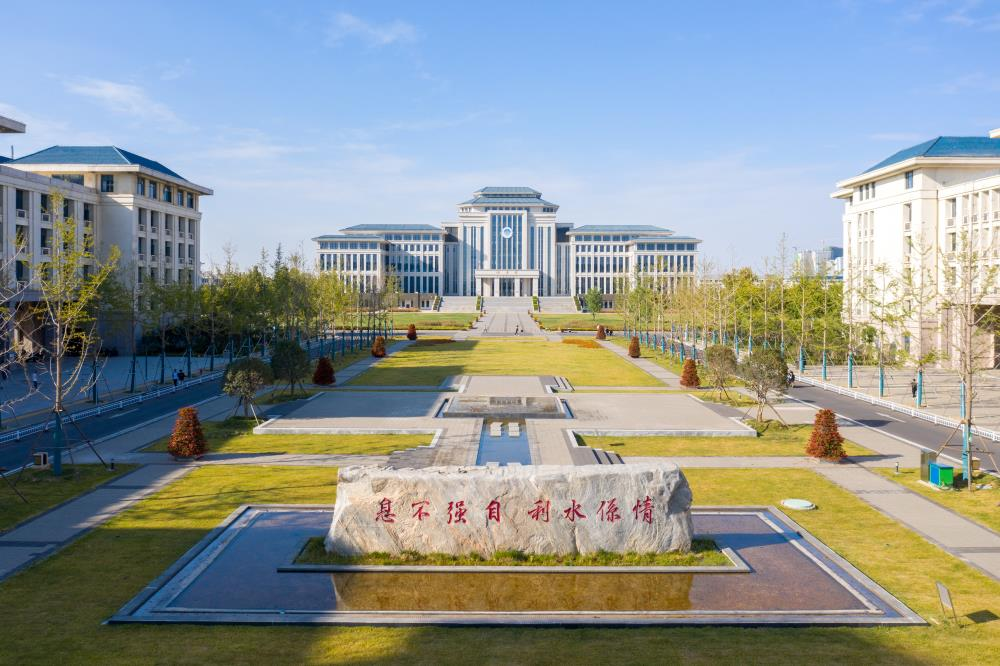

|
华北水利水电大学（North China University of Water Resources and Electric Power），简称“华水”，坐落于河南省郑州市，是水利部与河南省共建、以河南省管理为主的河南省特色骨干大学，是金砖国家网络大学中方高校牵头单位、金砖国家大学联盟成员、中俄交通大学联盟成员、世界水理事会会员单位，为国家首批硕士学位、博士学位授予权单位，入选教育部卓越工程师教育培养计划、中西部高校基础能力建设工程、卓越农林人才教育培养计划、少数民族高层次骨干人才计划，水利部水务研究培训中心、水利部电大开放教育办公室设在学校。 [54]
学校起源自1951年创建于北京的中央人民政府水利部水利学校，1954年更名为水利部北京水利学校。1958年北京水力发电学校、北京水力发电函授学院并入，成立北京水利水电学院。1969年迁至河北省磁县岳城水库办学，1971年更名为河北水利水电学院，1977年迁至河北省邯郸市办学，1978年更名为华北水利水电学院，1990年迁至河南省郑州市办学，2000年整建制由水利部划转河南省管理，2013年更名为华北水利水电大学。
截至2021年11月，学校建有花园校区（555亩）、龙子湖校区（1780亩）、江淮校区（1500亩），设有24个教学单位，有64个本科专业，4个博士学位授权一级学科，38个硕士学位授权一级学科和授权领域；有教职工2500余人，全日制在校生32766人（含预科45人），其中本科生29833人，硕士博士研究生2888人；非全日制研究生625人。工程科学学科进入ESI全球前1%。
我们学校一年四季都很美。以下是我们的校园风光




|
| |
|
| |